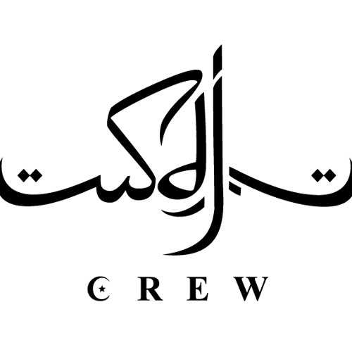

Historia
La SDJ Crew es uno de los grandes representantes del underground más crudo y duro de España. Representan a Vitoria en sus canciones aunque son de proveniencia madrileña. Sus representantes más destacados son Sore y Sr. Gris.
Comenzaron en 2006 con su EP Negua 365, donde definieron completamente el estilo que les caracteriza y que sería una gran influencia para futuras generaciones. En esta maqueta sacarían Una bala en tu cráneo, su canción más escuchada actualmente. Se mantendrían activos en foros hasta el año 2012, donde sacarían su trabajo más laureado, Commandos. Al año siguiente publicarían Nessuno, con una producción más profesional pero manteniendo ese estilo rudo y mafioso que les caracteriza.
Tras una larga pausa estuvieron trabajando en Hambre en colaboración con el productor Iván Tramontana. En 2021 llegaron con tres recopilatorios Underground Kings 1, 2 y 3, llevando al nuevo público sus canciones previas al 2012 con colaboraciones con artistas como Nasta o N-Wise Allah. En los últimos años Sr. Gris ha sacado dos LPs: UFC en solitario y Hispano en 2026 junto a la crew mexicana Viciosos Gang.